PQmagic磁盘分区教程
一、创建一个新的分区
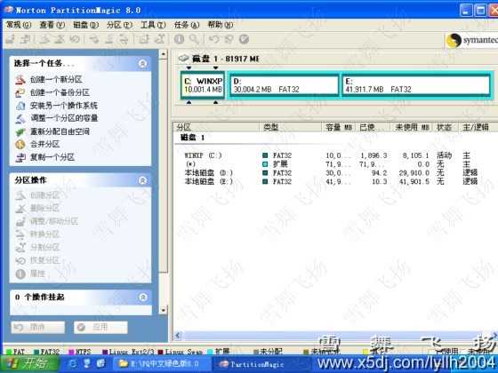
思绪：咱们把E盘分出10G给一个新分区。 在软件窗口左面任务栏中选择创建一个新的分区
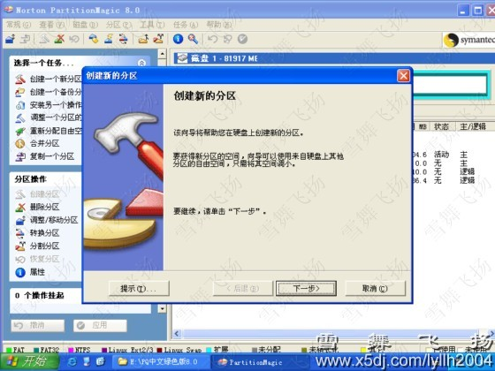
点下一步，会出现创建新分区的位置选择，一般咱们选择在最后一个分区的后面，即在E盘然后
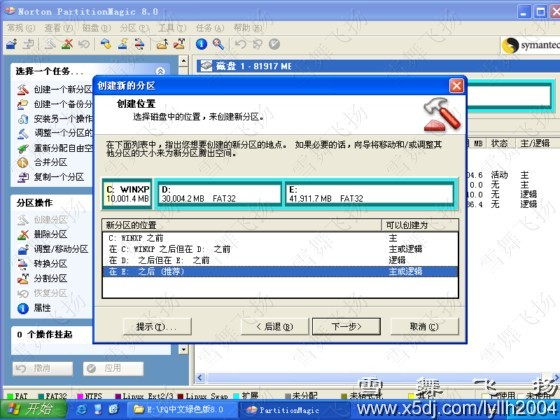
下一步，会出现削减哪个分区的空间，咱们选择E盘
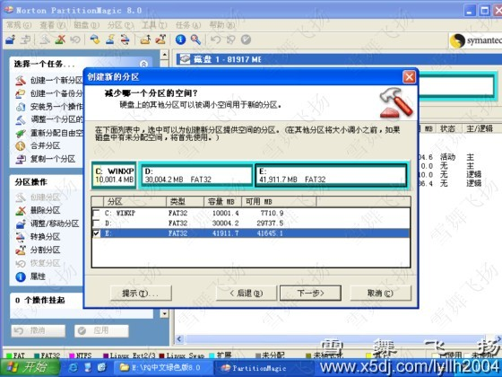
下一步，选择创建的新分区大小和格式
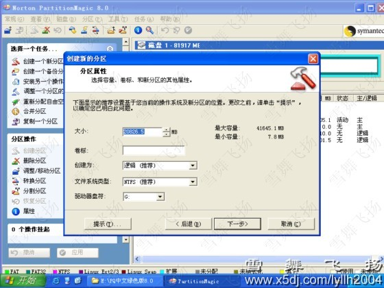
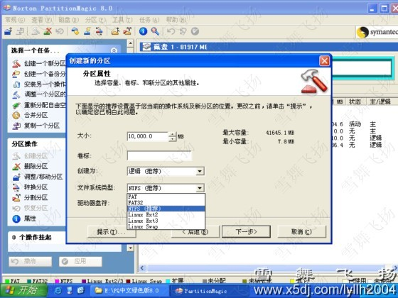
下一步
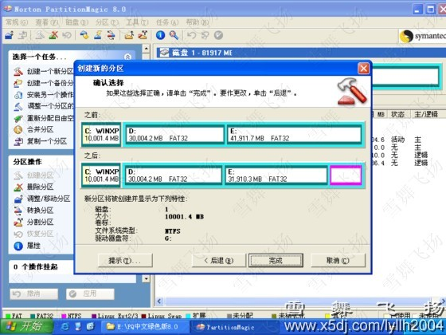
点完成，应用。出现以下界面
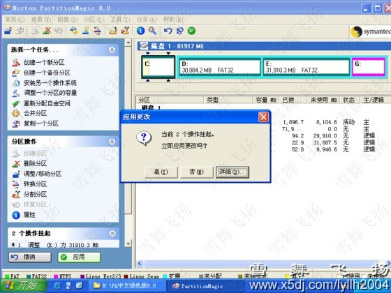
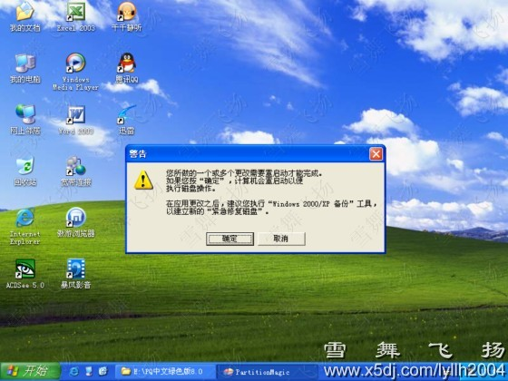
点确定，会重启计算机，并出现以下界面
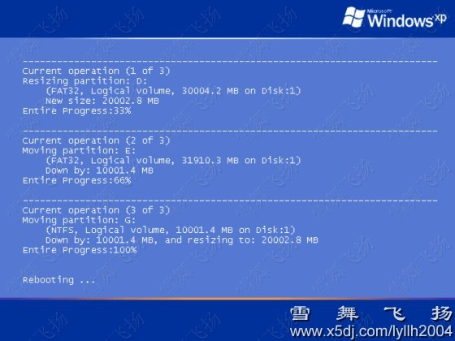
完成后再重启，会看到多了一个新分区，G盘
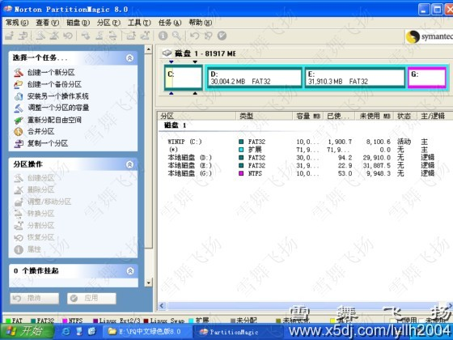
注：因为有光驱占用盘符F，以是新创建的分区盘符是G，你可以在系统的磁盘办理中把盘符调解过来。调解过程咱们就不讲了。
二、调解分区容量
思绪：咱们要把D盘容量调小，从其中划出10G容量给G盘。 在软件窗口左面任务栏中选择调解一个分区的容量
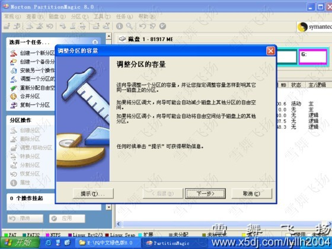
下一步
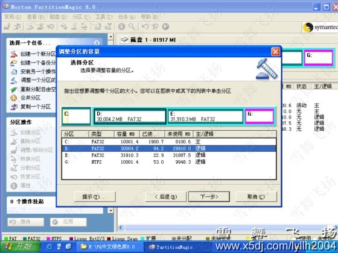
选择需要调解容量的D盘，下一步，会出现指定分区的新容量
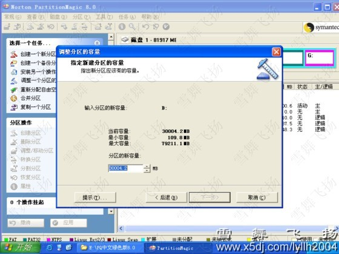
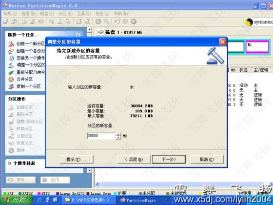
指定好D盘新容量后，下一步，会出现把骈枝的空间给哪一个分区
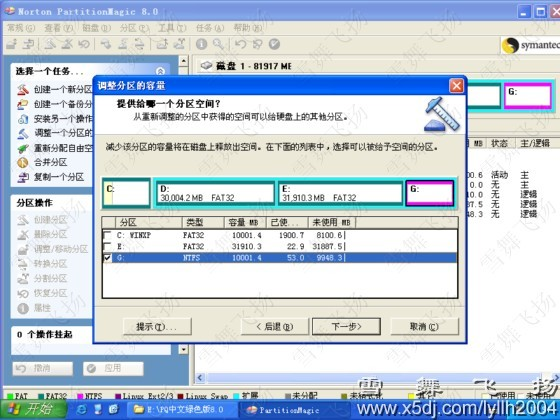
选择G盘，下一步
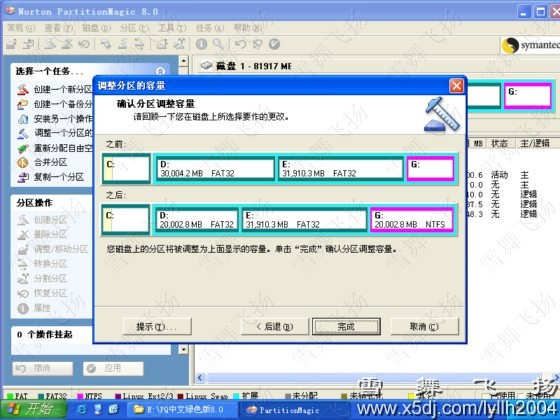
点完成，应用。还会出现重启，重启后看看容量是否变样了？
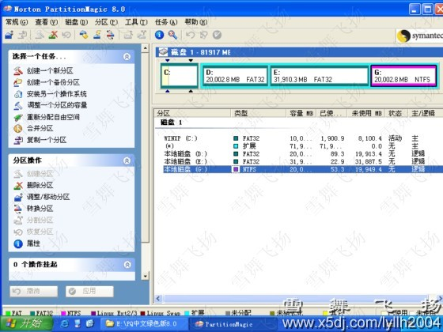
三、分区格式转换
思绪：咱们把G盘从NTFS格式转换成FAT32格式。 起首选中G盘
点击菜单 分区--转换
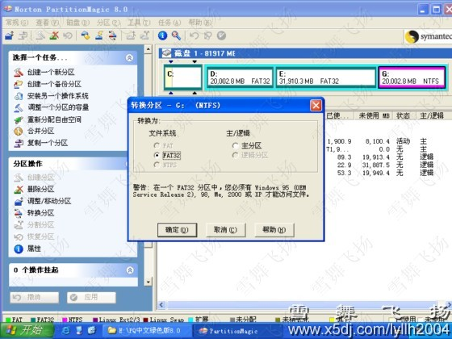
确定
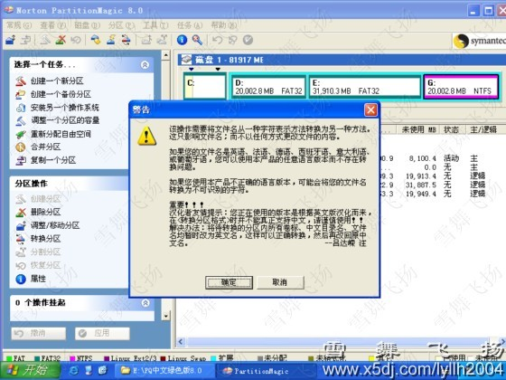
确定
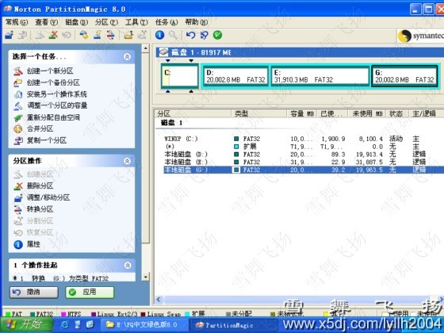
点应用，重启后便可完成格式转换。
四、归并分区
思绪：把E盘和G盘归并成一个分区。 在软件窗口左面任务栏中选择归并分区
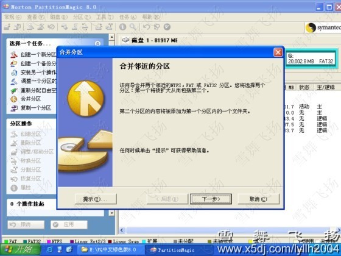
下一步，会出现选择要归并的头个分区，咱们选择E盘
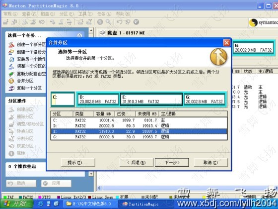
下一步，会出现选择要归并的第二个分区，咱们选择G盘
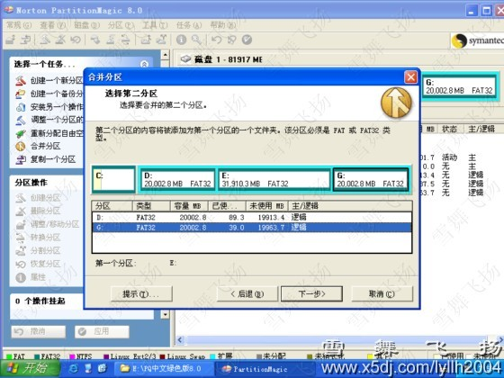
下一步，会出现选择输入一个文件夹名称，用来生成第二个分区的数值，为易于影象咱们在这搭文件夹名为G
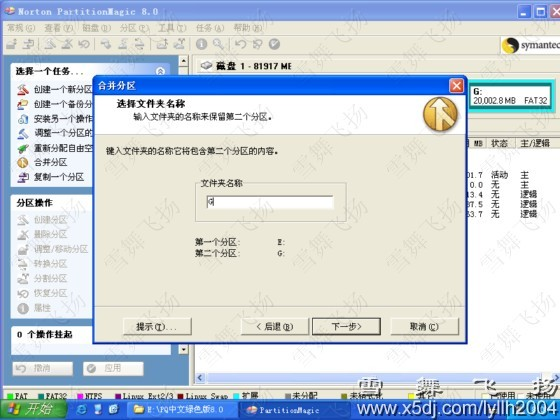
下一步，会出现驱动盘符更改
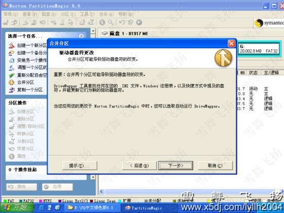
下一步，会出现确认归并
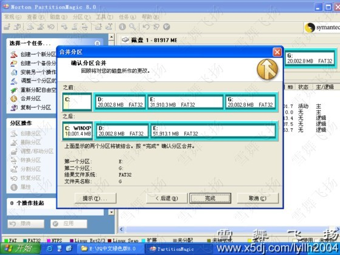
点完成，再点应用，就会出现会话框，确认、重启就完成了分区的归并。 重启后咱们会发明本来的G盘没有了，而容量都到了E盘
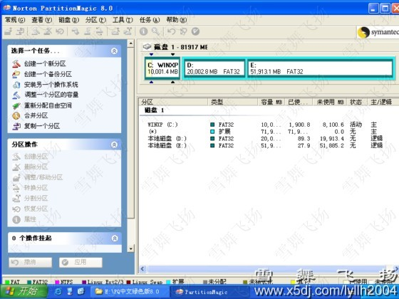
再看看E盘内，多了个名称为G的文件夹，内里是本来G盘的数值
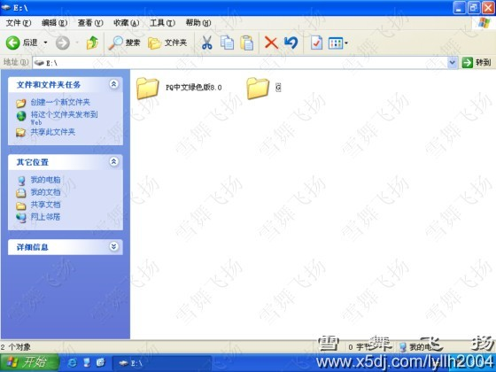
注重事项：
1.连结电源稳定 ： PQ典型长处是不损坏硬盘数值而对硬盘进行分区、归并分区、转换分区格式等操作。这些个操作无疑要涉及大量数值在硬盘分区间盘运，而盘运中转站就是物理内存(ROM部门)和虚拟内存，但物理内存(ROM部门)和虚拟内存却有一个天赋致命弱点：一朝掉去供电，所存储的数值便会消掉的一干二净，是以运行PQ时必须连结电源稳定。
2.谨慎硬盘分区系统格式转换操作 使用PQ可利便、快捷地使成为事实几种文件系统格式的转换，但在转换以前应注重：
a.FAT分区是DOS，Windows 3.1，Windows 95/98可以使用的；FAT32分区是Windows 95 OSR2，Windows 98，Windows NT5.0可以使用的；NTFS则由Windows NT系列专用；HPFS是OS2系统使用的。高一级的操作系统往往可以兼容低一级分区系统格式，而低一级的操作系统无法使用高一级的分区系统格式。
b.大都步伐不会受从FAT16转换为FAT32(或NTFS)的影响，但是FAT32(或NTFS)格式对于一些倚赖于纯FAT16格式的软件(如磁盘实用步伐PCTOOLS 9.0、Norton 95等)不能大好地支持。要使用这些个软件需要将FAT32再转换回FAT16格式或者进级这些个实用步伐到最新版本或下载使这些个软件与FAT32(或NTFS)相兼容的补钉。
c.由于FAT16文件系统的局限性，一个FAT16格式的分区最大容量是2473.2M。对一个超过2GB的分区进行FAT32转换为FAT操作时，可能会出现盘符杂乱且该分区不可读。用PM查看，预示Stack Overflow(仓库溢出)的错误信息。修改错误可试着运行Fdisk，把出错的逻辑分区删去，再重修逻辑分区。
d.转换为FAT32的分区容量不能小于256M；若将一个FAT32分区转换为FAT格式，必须保证至少有300-400M的自由空间。否则可能引起硬盘数值丢掉。
e.文件系统格式可以使成为事实硬盘上的特定空间和文件对特定用户开放，其他用户遭到步入或读写职权范围*。但一朝转换为FAT16或FAT32，硬盘上的所有空间和文件将对所有用户开放；同时在NFTS下对部门文件设置的特殊文件属性也将消掉。
3.归并分区要小心 PQ可以将一个硬盘上相邻的系统格式相同的两个分区合二为一。这项功效对于两个分区自由空间都所剩无几，而又需要一块领有较大自由空间的分区出格有用。 归并分区操作要花费较长的时间。若两个分区较大且分区内数值较多，归并操作可能要用上数个钟头之久，进度至关迟缓，有时候会给人以“死机”的错觉。 使用PQ归并两个分区一定要有耐心才行，运出发的日期间绝对不允许有因等不及或误认为“死机”而封闭或重启计算机和断电环境的发生。此类事情一朝发生，等你步入计算机时会发明要归并的两个分区被冠以“PQFLEX”的巻标而且分区预示为“PqRP”文件系统格式(究竟上并不是是一种文件系统格式，而是间断PQ后产生的一种不稳定文件格式状况)，或分区及此中的数值丢掉，甚至根本就无法步入计算机。